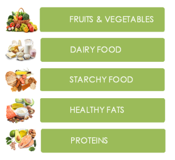

Balanced diet is made up of the 5 food groups

Due to their low fat content, Fruit and Vegetables are excellent for bulking up meals and increasing satiety without packing on the calories.
Dairy products are nutritious sources of protein and vitamins. They also include calcium, which helps maintain the strength of our bones.
Energy-dense foods with critical nutrients like calcium, iron, and vitamins can be found in Starchy Foods.
Our diets must contain Fatthey can help in the reduction of cholesterol and the risk of heart disease.
Proteins are naturally very low in fat and a good source of fiber, vitamins, and minerals.